Optimize Suspension Design Parameters Using Surrogate Model
Contents
- Overview
- Define Optimization Variables
- Load AI Models and Define Design Objective
- Define Constraints on Design Parameters
- Scenario 1: Minimize Roll Metric
- Scenario 2: Minimize Roll, Constrain Parameters
- Scenario 3: Minimize Ride, Nonlinear Constraint on Design Objective
- Scenario 4: Minimize (Ride + Roll)
- Scenario 5: Minimize Ride and Minimize Roll (Multi-Objective Optimization)
- Compare Solutions
- Validate Solutions with Simulation
Overview
This example demonstrates how to use optimization solvers to quickly identify optimal parameter values that meet design and performance criteria. AI surrogate models are used to quickly search the design space and the results are validated against the full multibody simulation model. The workflow is summarized and illustrated below:
- Define the optimization problem in terms of variables, objectives, and constraints.
- Identify a global solution to the optimization optimization problem.
- Verify the predicted performance metrics using the multibody model.

The code used to create this documentation is here: suspOpt_Optimize_Design.m
(return to Optimizing Vehicle Design Using AI and Simscape Overview)
Define Optimization Variables
Adjusting the design requires selecting a set of design parameters to tune. The design parameters have been selected using sensitivity analysis. The design parameters and their ranges are loaded into the MATLAB workspace and assembled into an optimization variable where the full optimization problem will be defined.
ans =
10×7 table
Label Parameter Index Use Min Max Default
_________________ ________________________________________________________________ _____ _____ _____ _____ _______
{'HP_A1_AR_Inbx'} {'Vehicle.Chassis.SuspA1.AntiRollBar.sInboard.Value' } 1 true -0.35 -0.25 -0.3
{'HP_A1_Ro_Inbz'} {'Vehicle.Chassis.SuspA1.Linkage.TrackRod.sInboard.Value' } 3 true 0.175 0.235 0.205
{'HP_A1_Ro_Outz'} {'Vehicle.Chassis.SuspA1.Linkage.TrackRod.sOutboard.Value' } 3 true 0.155 0.235 0.185
{'HP_A2_AR_Inbx'} {'Vehicle.Chassis.SuspA2.AntiRollBar.sInboard.Value' } 1 true 0.25 0.35 0.3
{'HP_A2_AR_Outx'} {'Vehicle.Chassis.SuspA2.AntiRollBar.sOutboard.Value' } 1 true 0 0.1 0.05
{'HP_A2_AR_Outy'} {'Vehicle.Chassis.SuspA2.AntiRollBar.sOutboard.Value' } 2 true 0.55 0.65 0.6
{'HP_A2_LA_Outy'} {'Vehicle.Chassis.SuspA2.Linkage.LowerWishbone.sOutboard.Value'} 2 true 0.656 0.756 0.706
{'HP_A2_LA_Outz'} {'Vehicle.Chassis.SuspA2.Linkage.LowerWishbone.sOutboard.Value'} 3 true 0.1 0.2 0.15
{'HP_A2_LA_inRz'} {'Vehicle.Chassis.SuspA2.Linkage.LowerWishbone.sInboardR.Value'} 3 true 0.1 0.2 0.15
{'HP_A2_UA_Outz'} {'Vehicle.Chassis.SuspA2.Linkage.UpperWishbone.sOutboard.Value'} 3 true 0.4 0.5 0.45
Load AI Models and Define Design Objective
To accelerate the optimization, AI surrogate models will be used. The AI surrogate models are loaded from a file. The models can predict a performance metric based on the design parameters. The function call to obtain the prediction from the AI surrogate model is added to the optimization variable which already has the design parameters and constraints.
Define Constraints on Design Parameters
The design parameters have upper and lower and upper limits. Additional restrictions must be placed on the track rod hardpoints to avoid excessive bump steer.
Specifically: -0.05 <= HP_A1_Ro_Inbz - HP_A1_Ro_Outz <= 0.04
Scenario 1: Minimize Roll Metric
Our optimization problem is defined in terms of design parameters, objective, and constraints. We must now choose an optimization solver and optimize the design.
Recommendations for choosing an optimization solver
Some things to consider when choosing between these solvers:
- fmincon is the default solver for the problem. It is a local, gradient-based optimization solver, so the solution will depend on the initial point the solver starts with.
- patternsearch is a direct search solver that does not use gradients. It requires more function evaluations that gradient-based solvers, but is more robust to noise and discontinuities.
- ga is a population-based global solver. It requires many function calls to the objective function, but since acquiring prediction values from the AI models is so computationally inexpensive and fast, could be a feasible approach. Specifying an additional hybrid function option tells the solver to run fmincon starting from the solution of ga, which can help further improve the solution.
- surrogateopt is more beneficial for optimization problems where the objective function is computationally expensive to compute.
- gamultiobj and paretosearch are multi-objective solvers. They can be applied to solve single-objective problems, but they likely will be as efficient.
Pattern search is used here, as it provides good optimization results while solving quickly. The user can experiment with different solvers as well.
Solving problem using patternsearch. patternsearch stopped because the mesh size was less than options.MeshTolerance. Elapsed time is 9.983237 seconds.
Scenario 2: Minimize Roll, Constrain Parameters
The design space for our system has changed.
- Inboard longitudinal position of the rear anti-roll bar is fixed to 0.30 m
- Lower arm inboard rear hardpoint height limited to 0.10m - 0.15m
These changes can be applied to the existing optimization variable and we can rerun the optimization.
Solving problem using patternsearch. patternsearch stopped because the mesh size was less than options.MeshTolerance. Elapsed time is 5.531340 seconds.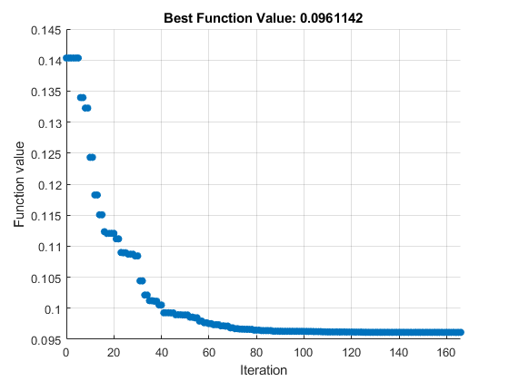
Scenario 3: Minimize Ride, Nonlinear Constraint on Design Objective
Suppose the ride discomfort metric must meet the following requirement: rideMetric <= 0.95. The optimization problem can be modified to include this requirement as a nonlinear constraint.
Solving problem using patternsearch. Optimization finished: mesh size less than options.MeshTolerance and constraint violation is less than options.ConstraintTolerance. Elapsed time is 2.743989 seconds.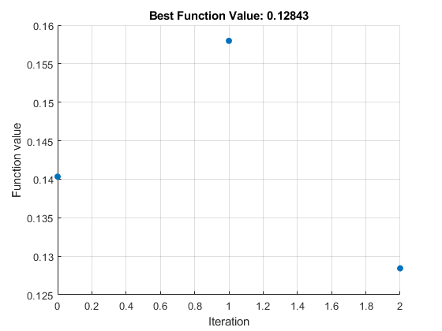 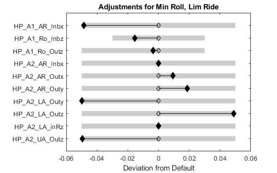
Scenario 4: Minimize (Ride + Roll)
Multiple responses can be combined into a single objective function. The optimization solver will optimize both responses at the same time.
Solving problem using patternsearch. patternsearch stopped because the mesh size was less than options.MeshTolerance. Elapsed time is 7.808693 seconds.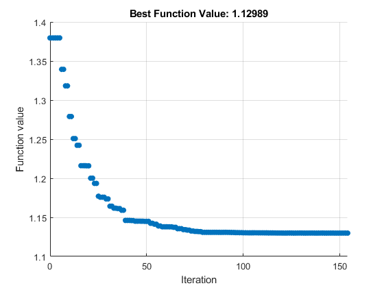

Scenario 5: Minimize Ride and Minimize Roll (Multi-Objective Optimization)
The approach above of combining multiple responses into a single objective function identifies a single solution on the Pareto front. The location of the solution along the Pareto front depended on the weight and scale factors used for each response. A more general approach is to use a multi-objective optimization algorithm to resolve the full Pareto front, fully characterizing the optimal trade-off between the objectives.
Solving problem using gamultiobj. gamultiobj stopped because the average change in the spread of Pareto solutions is less than options.FunctionTolerance. Elapsed time is 167.964137 seconds.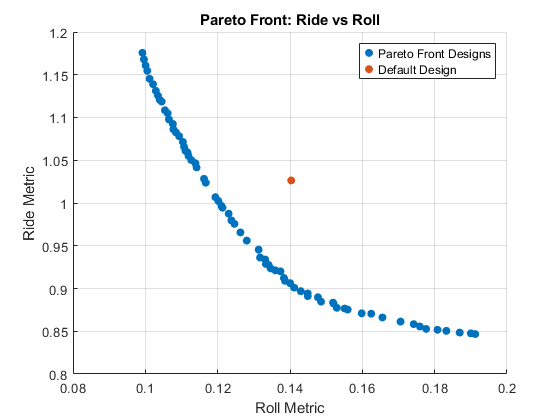

Compare Solutions
Compare the design solutions found from the different optimization problems. Inspect the tabular data shown above, or create plots to visualize the data. For example, plot the solutions on a parallel coordinate plot.
 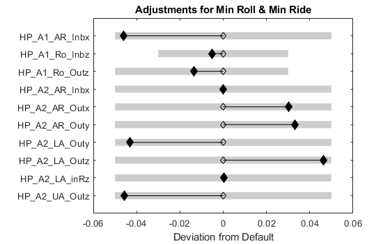
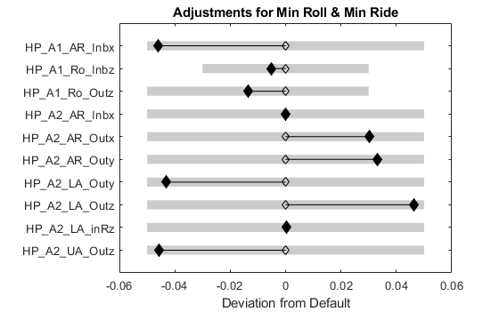 Validate Solutions with Simulation
Validate the predicted performance of the optimization solutions using Simscape simulations.
6 parameter sets submitted, 6 obey parameter constraints.
6 simulations completed in 120.3645 seconds.
Of 6 tests, 6 were valid.
responseComparison =
6×3 table
predResponseTable simResponseTable predErrTable
_________________________________________________________ ________________________ ______________________________________
Description Ride Predicted Roll Predicted RideMetric RollMetric Roll % Error RideDiscomfort % Error
_____________________ ______________ ______________ __________ __________ ____________ ______________________
"Default" 1.0264 0.14033 1.0275 0.1407 0.10631 0.26276
"Min Roll" 1.2914 0.07144 1.3033 0.079737 0.9126 10.406
"Min Roll, Lim Pars" 1.1959 0.096114 1.199 0.097508 0.26549 1.4294
"Min Roll, Lim Ride" 0.94753 0.12843 0.95314 0.12868 0.58865 0.19301
"Min (Roll+Ride)" 1.1745 0.096464 1.1757 0.09947 0.097303 3.0229
"Min Roll & Min Ride" 0.90907 0.1386 0.91301 0.13952 0.43235 0.65541
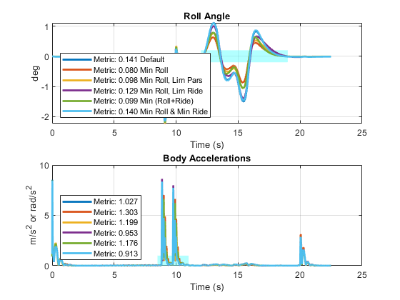 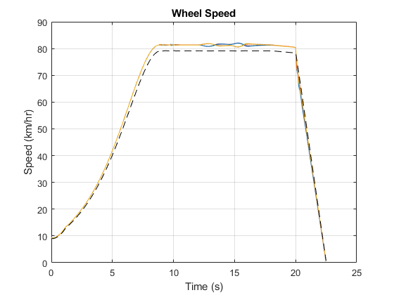 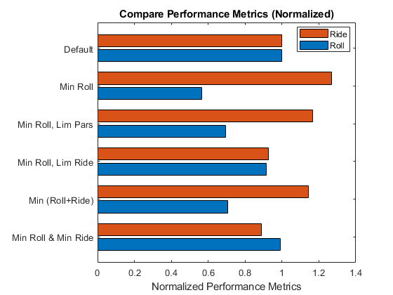 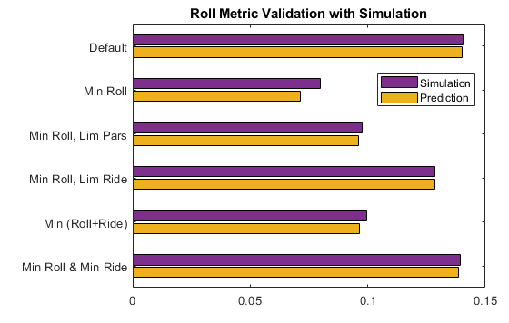